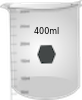
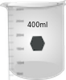

మాన్యువల్
1. సజల 1 x 10 ను సిద్ధం చేయండి-3M 2-నైట్రోనిలిన్ ద్రావణం. 0.0138 గ్రా పదార్థాన్ని తూకం చేసి 100 ఎంఎల్ నీటిలో కరిగించండి. ఇది స్టాక్ పరిష్కారంగా ఉపయోగించబడుతుంది.
2. పై స్టాక్ ద్రావణం నుండి, 2-నైట్రోఅనిలిన్ పరిష్కారాల యొక్క ఐదు వేర్వేరు సాంద్రతలను సిద్ధం చేయండి (ఉదాహరణకు, 0.0001 M, 0.00008 M, 0.00006 M, 0.00004 M, మరియు 0.00002 M).
3. కంప్యూటర్ మరియు పరికర శక్తులపై మారండి; పరికరం యొక్క ‘సన్నాహక’ కోసం 30 నిమిషాలు వేచి ఉండండి.
4. పిసి ద్వారా వాయిద్యంలో కాంతి వనరులు (యువి మరియు కనిపించేవి), స్కాన్ వేగం,% ట్రాన్స్మిటెన్స్ లేదా శోషక ప్రదర్శన మోడ్, తరంగదైర్ఘ్యం ఆసక్తి శ్రేణి మొదలైనవి ఎంచుకోవచ్చు.
5. ఇచ్చిన మార్గం పొడవు (ఇక్కడ 1 సెం.మీ) తో రెండు శుభ్రమైన మరియు పొడి క్వార్ట్జ్ కువెట్లను తీసుకోండి.
6. ఒక క్యూవెట్ను నమూనా ఖాళీతో (ప్రస్తుత సందర్భంలో స్వేదనజలం), మరొక క్యూట్ను 2-నైట్రోఅనిలిన్ ద్రావణంతో నింపండి. అత్యల్ప ఏకాగ్రతతో ప్రారంభించండి. (ఎందుకు?)
7. నమూనా హోల్డర్లో నమూనాను ఖాళీగా ఉంచండి మరియు నమూనా హోల్డర్లో నమూనాను ఉంచండి.
8. శోషణ స్కాన్ను అమలు చేయండి.
9. అదేవిధంగా మిగతా అన్ని నమూనాల కోసం స్పెక్ట్రల్ పరుగులు చేయబడతాయి. విశ్లేషణ యొక్క క్రమం తక్కువ నుండి అధిక ఏకాగ్రత వరకు ఉండాలి. ప్రతిసారీ కొలిచే (రెండుసార్లు లేదా మూడుసార్లు) క్యూట్ కొలిచే (మొదట ద్రావకం మరియు తరువాత) ద్రావణంలో కొంత భాగాన్ని తీసుకుంటుంది.
10. మొత్తం డేటాను సేకరించడానికి డేటా టాబ్ పై క్లిక్ చేయండి.
11. ప్లాట్ శోషణ వర్సెస్ అన్ని సాంద్రతలకు తరంగదైర్ఘ్యం.
12. ప్రతి ఏకాగ్రతకు గరిష్ట శోషణ (λmax) మరియు సంబంధిత శోషణ యొక్క తరంగదైర్ఘ్యాలను నిర్ణయించండి మరియు ఈ డేటాను కలిగి ఉన్న పట్టికను సిద్ధం చేయండి.
13. ప్రతి λmax కోసం శోషణను సంబంధిత ఏకాగ్రతతో విభజించి ελ విలువలను నిర్ణయించండి (మార్గం పొడవు = 1 సెం.మీ గుర్తుంచుకోండి). అప్పుడు సగటు లెక్కించండి.
14. ఇచ్చిన λmax కోసం శోషణకు వ్యతిరేకంగా ఏకాగ్రతకు వ్యతిరేకంగా ప్లాట్ చేయడం ద్వారా అమరిక ప్లాట్లను నిర్మించండి. ఈ విధంగా 2-నైట్రోఅనిలిన్ యొక్క మూడు గరిష్ట స్థానాలకు మూడు అమరిక ప్లాట్లను నిర్మిస్తుంది.
15. అమరిక ప్లాట్ల వాలులను నిర్ణయించండి మరియు అందువల్ల మూడు గరిష్ట స్థానాలకు సంబంధిత ελ విలువలు.
16. క్రమాంకనం ప్లాట్ల నుండి నిర్ణయించిన ελ విలువలతో సగటు ελ విలువలను పోల్చండి.
17. కాంతి శోషణ, σ (సెం.మీ 2 లో) మరియు ఓసిలేటర్ బలాలు, ఎఫ్ఎన్ఎమ్ కోసం పరమాణు క్రాస్-సెక్షన్లను లెక్కించండి.
18. మీ ఫలితాలను చర్చించండి.


 
